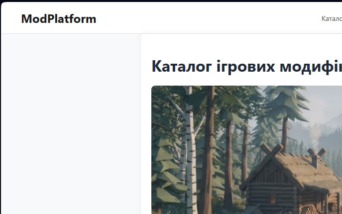
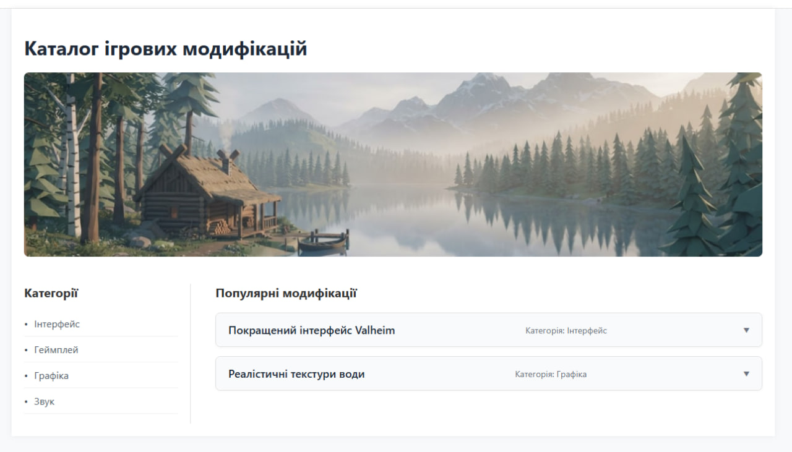
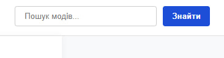

Тема, Мета, Місце розташування сайту та звіту (ЛР №2)
Тема:
КАСКАДНІ ТАБЛИЦІ СТИЛІВ. СЕЛЕКТОРИ ТЕГУ, КЛАСУ, ІДЕНТИФІКАТОРА. СТИЛЬОВЕ ОФОРМЛЕННЯ ТЕКСТОВИХ ЕЛЕМЕНТІВ В HTML-ДОКУМЕНТАХ.
Мета:
Набути навички роботи з селекторами, ідентифікаторами, списками, властивостями кольору і фону, відступами та оформленням текстових елементів.
Місце розташування:
Способи підключення стилів
В HTML існує 3 способи підключення CSS:
- Внутрішні (inline): використання атрибута
style="..."безпосередньо в тегу. - Глобальні (internal): розміщення CSS-коду всередині тегу
<style>в блоці<head>. - Зовнішні (external): підключення окремого файлу .css.
Селектори тегу
Селектор тегу застосовує стилі до всіх вказаних HTML-тегів на сторінці.
HTML-код
<body> ... </body>
CSS-код
body {
font-family: 'Segoe UI', Tahoma, Geneva, Verdana, sans-serif;
background-color: #f8f9fa;
}

Селектори класу
Селектор класу починається з крапки (.) і застосовується до елементів з відповідним атрибутом class.
HTML-код
<main class="container"> ... </main>
CSS-код
.container {
max-width: 1200px;
background-color: #ffffff;
}

Селектори ідентифікаторів
Селектор ідентифікатора починається з решітки (#).
HTML-код
<button type="submit" id="search-btn">Знайти</button>
CSS-код
#search-btn {
background-color: #2563eb;
color: white;
}

Інші селектори
Універсальний (*): * { box-sizing: border-box; } - застосовується до всіх елементів.
Дочірній (>): .main-nav > a { color: #555; } - застосовується лише до прямих нащадків (посилань у меню).
Сусідній (+): .sidebar h2 + ul { margin-top: 15px; } - застосовується до списку, що йде одразу після заголовка H2.
Атрибута ([]): input[type="text"] { border-radius: 4px; } - застосовується до поля вводу.
CSS: Шрифти, Текст, Таблиці, Фон, Контур, Списки, CSS Просунутий
Шрифти та текст: Використано font-family: 'Segoe UI', font-weight: bold, color: #333.
Фон: Використано background-color: #f8f9fa для body.
Контур: Для поля пошуку використано outline: 2px solid #2563eb; при натисканні.
Багаторівневі списки: Застосовано list-style-type: square для батьківського списку.
CSS Просунутий: Для блоку .container додано тінь box-shadow: 0 4px 15px rgba(0,0,0,0.05);, а для кнопки пошуку — плавну анімацію transition: background-color 0.3s ease;.
ВИСНОВКИ до ЛР №2
Під час виконання другої лаби я попрактикувався з CSS і стилізував свій каталог модифікацій. Додав селектори тегів, класів та ідентифікаторів, щоб нормально налаштувати кольори, шрифти, рамки та відступи. Із цікавого — спробував просунуті фічі, такі як тіні для блоків та плавна анімація кнопки.